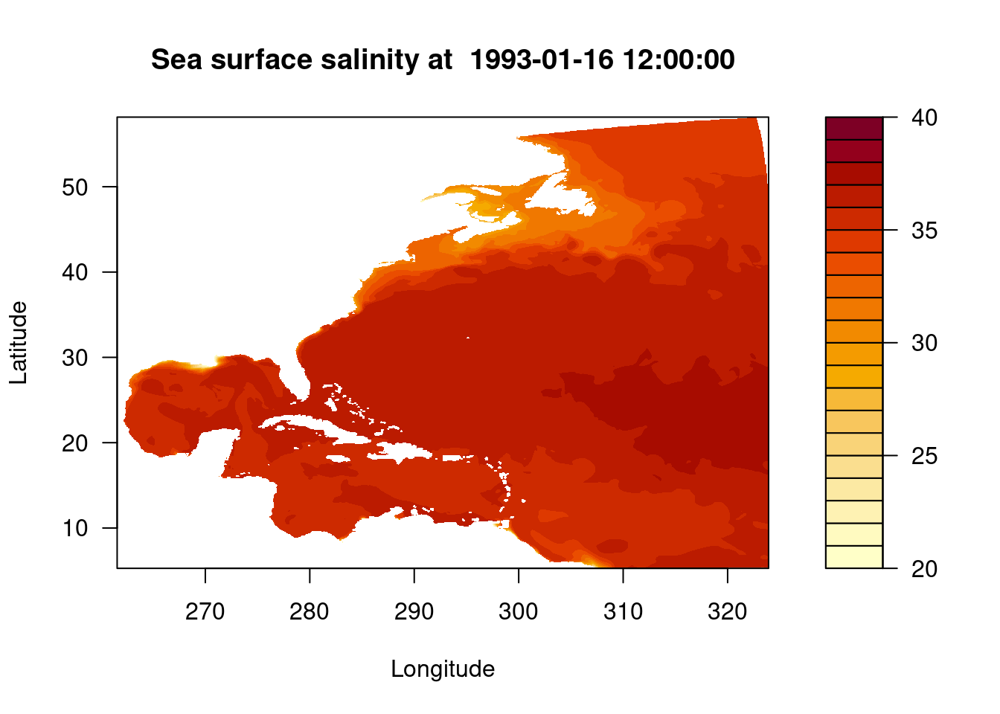
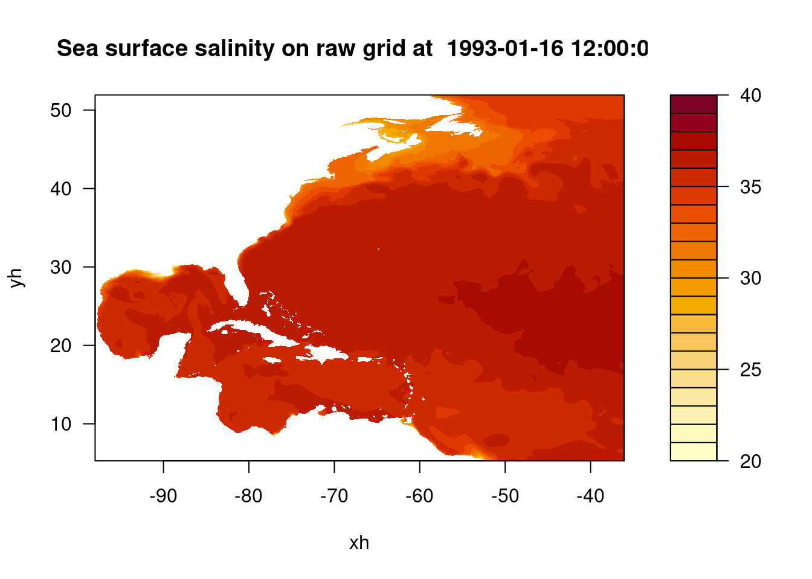

library("ncdf4")R - Accessing CEFI Data via OPeNDAP
The following notebook is a quick demonstration on how to use R to access the OPeNDAP server data. See the full CEFI OPeNDAP info here. This is designed for users that prefer the programing interface to be R. There are already couple of great resource related to preprocessing and visualizing data in R. Therefore, the notebook will not repeat that part of the code but focusing on how to accessing the data from a R interface. The resources is listed below
- Using rerddap A detailed introduction of rerddap package and showing the visualization in many different datasets.
- IOOS CodeLab This uses a different package called xtractomatic to access the ERDDAP data.
Packages used
- rerddap
- ncdf4
- maps
- reticulate
- dplyr
- ggplot2
Import R packages
Direct OPeNDAP server data access
With the help of the ncdf4 package we are able to load the data that is hosted on the OPeNDAP server and grab the coordinate and attribute without the need to downloading the entire dataset.
- first we need to find the URL that can provide the OPeNDAP access for R (this can be find on the THREDDS server here)
- click on OPeNDAP option when clicking on any of the netcdf files
- on top of the OPeNDAP form there is a URL for accessing the data
Tip
Understanding of the OPeNDAP server and what it provides is highly recommended before reading the following intructions.
Link to data source (regular gridded product)
# Specify the OPeNDAP server URL (using regular grid output)
url <- "http://psl.noaa.gov/thredds/dodsC/Projects/CEFI/regional_mom6/northwest_atlantic/hist_run/regrid/ocean_monthly.199301-201912.sos.nc"
# Open a NetCDF file lazily and remotely
ncopendap <- nc_open(url)Load the data to local memory
Caution
There is a 500MB limit per request so making sure the data request each time is not over the limit. For loop to seperate the request is one of the solution to avoid the single time request becoming to large.
Here we only request a single slice in the time domain but the whole northeast Atlantic domain in the regional mom6 model. Since this is the part that actually downloading the data. It would takes a bit longer.
# Read the data into memory
timeslice = 1
lon <- ncvar_get(ncopendap, "lon")
lat <- ncvar_get(ncopendap, "lat")
time <- ncvar_get(ncopendap, "time",start = c(timeslice), count = c(1))
# Read a slice of the data into memory
sos <- ncvar_get(ncopendap, "sos", start = c(1, 1, timeslice), count = c(-1, -1, 1))# the matrix output of sea surface salinity
dim(sos)[1] 774 844Converting time array to datetime
The origial time would be only in the unit of time “days since 1993-01-01”. In order to understand what is the actual time. We need to grab the time unit and the time number and convert to a datetime object.
# Get the units
tunits <- ncatt_get(ncopendap, "time", "units")
datesince <- tunits$value
datesince <- substr(datesince, nchar(datesince)-9, nchar(datesince))
datesince[1] "1993-01-01"# convert the number to datetime (input should be in second while the time is in unit of days)
datetime_var <- as.POSIXct(time*86400, origin=datesince, tz="UTC")
datetime_var[1] "1993-01-16 12:00:00 UTC"Quick view of the data
filled.contour(lon, lat, sos, main = paste("Sea surface salinity at ", datetime_var), xlab = "Longitude", ylab = "Latitude", levels = pretty(c(20,40), 20))
Convert the matrix to dataframe
df <- expand.grid(X = lon, Y = lat)
data <- as.vector(t(sos))
df$Data <- data
names(df) <- c("lon", "lat", "sos")head(df) lon lat sos
1 261.5577 5.272542 NA
2 261.6384 5.272542 NA
3 261.7191 5.272542 NA
4 261.7998 5.272542 NA
5 261.8804 5.272542 NA
6 261.9611 5.272542 NALink to data source (Raw gridded product)
Let’s proceed to load a more complex data structure, specifically the raw grid structure from the regional MOM6 output. This time besides the data itself we also need to load the grid structure that is stored in another file
# Specify the OPeNDAP server URL (using regular grid output)
url <- "http://psl.noaa.gov/thredds/dodsC/Projects/CEFI/regional_mom6/northwest_atlantic/hist_run/ocean_monthly.199301-201912.sos.nc"
url_static <- "http://psl.noaa.gov/thredds/dodsC/Projects/CEFI/regional_mom6/northwest_atlantic/hist_run/ocean_static.nc"
# Open a NetCDF file lazily and remotely
ncopendap <- nc_open(url)
ncstaticopendap <- nc_open(url_static)Load the data to local memory
# Read the data into memory
timeslice = 1
lon <- ncvar_get(ncstaticopendap, "geolon")
lat <- ncvar_get(ncstaticopendap, "geolat")
x <- ncvar_get(ncopendap, "xh")
y <- ncvar_get(ncopendap, "yh")
time <- ncvar_get(ncopendap, "time",start = c(timeslice), count = c(1))
# Read a slice of the data into memory
sos <- ncvar_get(ncopendap, "sos", start = c(1, 1, timeslice), count = c(-1, -1, 1))# the matrix output of sea surface salinity in raw grid
dim(sos)[1] 775 845Converting time array to datetime
The origial time would be only in the unit of time “days since 1993-01-01”. In order to understand what is the actual time. We need to grab the time unit and the time number and convert to a datetime object.
# Get the units
tunits <- ncatt_get(ncopendap, "time", "units")
datesince <- tunits$value
datesince <- substr(datesince, nchar(datesince)-18, nchar(datesince)-8)
datesince[1] "1993-01-01 "# convert the number to datetime (input should be in second while the time is in unit of days)
datetime_var <- as.POSIXct(time*86400, origin=datesince, tz="UTC")
datetime_var[1] "1993-01-16 12:00:00 UTC"Quick view of the data
filled.contour(x, y, sos, main = paste("Sea surface salinity on raw grid at ", datetime_var), xlab = "xh", ylab = "yh", levels = pretty(c(20,40), 20))
Convert the matrix to dataframe
Since we might want the dataframe to represent the lon lat data structure. We can convert the lon, lat,(not xh,yh which represents the grid number and not the actual lon lat) and data matrix to the dataframe.
X <- as.vector(t(lon))
Y <- as.vector(t(lat))
data <- as.vector(t(sos))
df <- data.frame(
"lon" = X,
"lat" = Y,
"sos" = data
)head(df) lon lat sos
1 -98 5.272542 NA
2 -98 5.352199 NA
3 -98 5.431845 NA
4 -98 5.511480 NA
5 -98 5.591105 NA
6 -98 5.670719 NA